Reading Assignments and Exercises
Multiplication is more complicated than addition, being implemented by shifting as well as addition. Because of the partial products involved in most multiplication algorithms, more time and more circuit area is required to compute, allocate, and sum the partial products to obtain the multiplication result.
We herein discuss three versions of the multiplier design based on the pencil-and-paper algorithm for multiplication that we all learned in grade school, which operates on Boolean numbers, as follows:
Multiplicand: 0010 # Stored in register r1
Multiplier: x 1101 # Stored in register r2
--------------------
Partial Prod 0010 # No shift for LSB of Multiplier
" " 0000 # 1-bit shift of zeroes (can omit)
" " 0010 # 2-bit shift for bit 2 of Multiplier
" " 0010 # 3-bit shift for bit 3 of Multiplier
-------------------- # Zero-fill the partial products and add
PRODUCT 0011010 # Sum of all partial products -> r3
A flowchart of this algorithm, adapted for multiplication of 32-bit numbers, is shown in Figure 3.15, below, together with a schematic representation of a simple ALU circuit that implements this version of the algorithm. Here, the multiplier and the multiplicand are shifted relative to each other, which is more efficient than shifting the partial products alone.
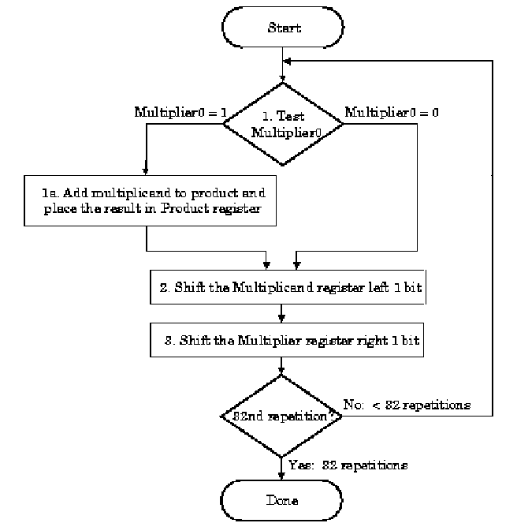
(a)
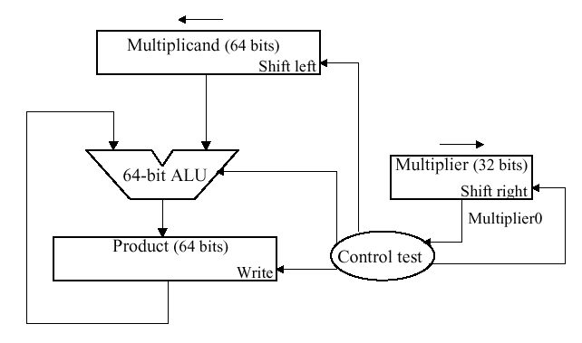
(b)
Figure 3.15. Pencil-and-paper multiplication of 32-bit Boolean
number representations: (a) algorithm, and (b) simple ALU circuitry -
adapted from [Maf01].
The second version of this algorithm is shown in Figure 3.16. Here, the product is shifted with respect to the multiplier, and the multiplicand is shifted after the product register has been shifted. A 64-bit register is used to store both the multiplicand and the product.
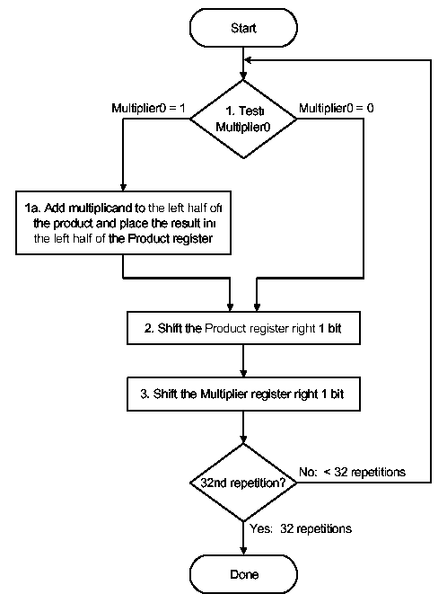
(a)
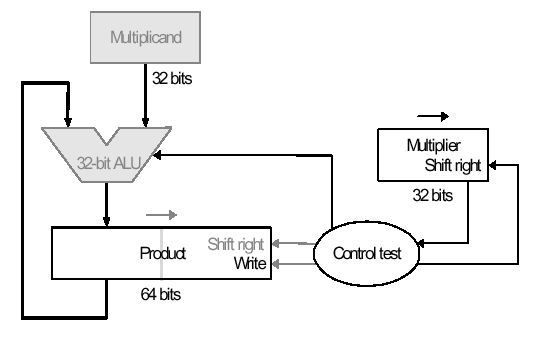
(b)
Figure 3.16.
Second version of pencil-and-paper multiplication of 32-bit Boolean
number representations: (a) algorithm, and (b) schematic diagram of
ALU circuitry - adapted from [Maf01].
The final version puts results in the product register if and only if the least significant bit of the product produced on the previous iteration is one-valued. The product register only is shifted. This reduces by approximately 50 percent the amount of shifting that has to be done, which reduces time and hardware requirements. The algorithm and ALU schematic diagram is shown in Figure 3.17.
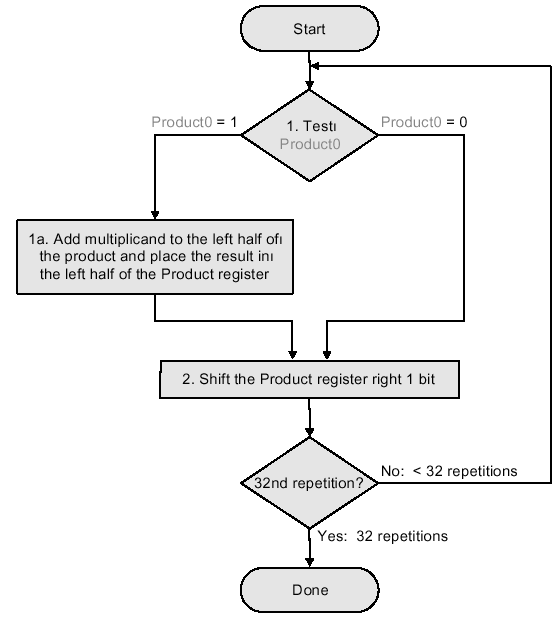
(a)
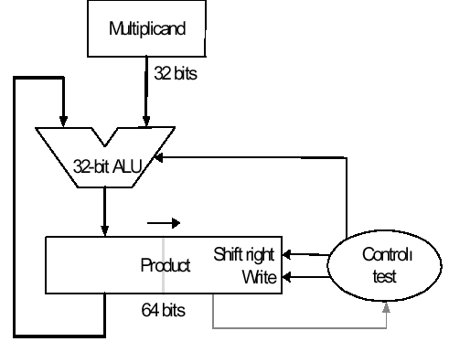
(b)
Figure 3.17.
Third version of pencil-and-paper multiplication of 32-bit Boolean
number representations: (a) algorithm, and (b) schematic diagram of
ALU circuitry - adapted from [Maf01].
Thus, we have the following shift-and-add scheme for multiplication:
The preceding algorithms and circuitry does not hold for signed multiplication, since the bits of the multiplier no longer correspond to shifts of the multiplicand. The following example is illustrative:
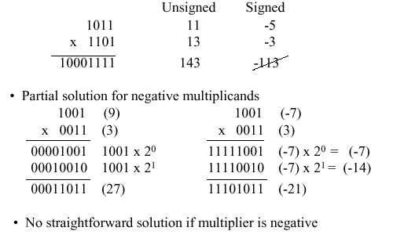
A solution to this problem is Booth's Algorithm, whose flowchart and corresponding schematic hardware diagram are shown in Figure 3.18. Here, the examination of the multiplier is performed with lookahead toward the next bit. Depending on the bit configuration, the multiplicand is positively or negatively signed, and the multiplier is shifted or unshifted.
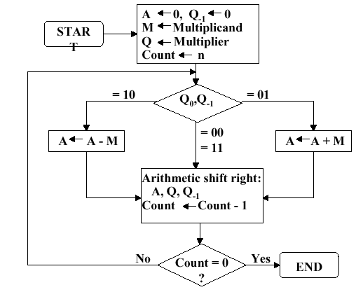
(a)
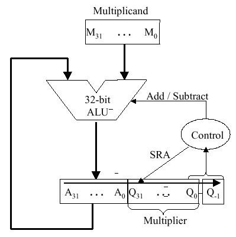
(b)
Figure
3.18. Booth's procedure for multiplication of 32-bit Boolean
number representations: (a) algorithm, and (b) schematic diagram of
ALU circuitry - adapted from [Maf01].
Observe that Booth's algorithm requires only the addition of a subtraction step and the comparison operations for the two-bit codes, versus the one-bit comparison in the preceding three algorithms. An example of Booth's algorithm follows:
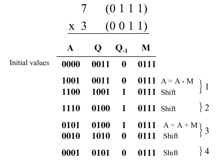
Here N = 4 iterations of the loop are required to produce a product from two N = 4 digit operands. Four shifts and two subtractions are required. From the analysis of the algorithm shown in Figure 3.18a, it is easily seen that the maximum work for multiplying two N-bit numbers is given by O(N) shift and addition operations. From this, the worst-case computation time can be computed given CPI for the shift and addition instructions, as well as cycle time of the ALU.
Division is a similar operation to multiplication, especially when implemented using a procedure similar to the algorithm shown in Figure 3.18a. For example, consider the pencil-and-paper method for dividing the byte 10010011 by the nybble 1011:
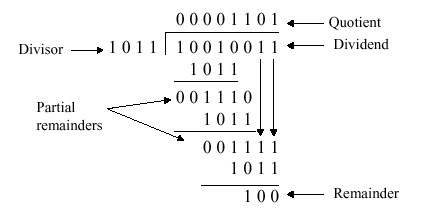
The governing equation is as follows:
Dividend = Quotient · Divisor + Remainder .
3.3.2.1. Unsigned Division. The unsigned division algorithm that is similar to Booth's algorithm is shown in Figure 3.19a, with an example shown in Figure 3.19b. The ALU schematic diagram in given in Figure 3.19c. The analysis of the algorithm and circuit is very similar to the preceding discussion of Booth's algorithm.
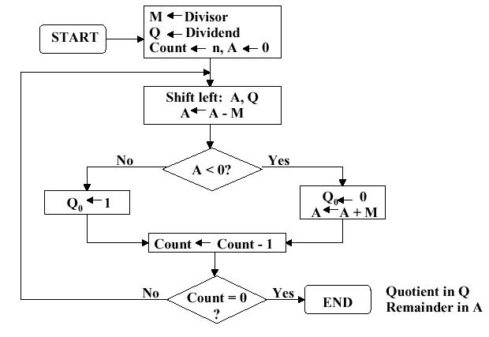
(a)
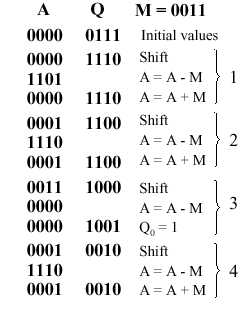
(b)
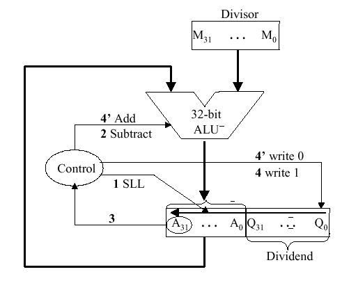
(c)
Figure
3.19. Division of 32-bit Boolean number representations: (a)
algorithm, (b) example using division of the unsigned integer 7 by the
unsigned integer 3, and (c) schematic diagram of ALU circuitry -
adapted from [Maf01].
3.3.2.2. Signed Divisiion. With signed division, we negate the quotient if the signs of the divisor and dividend disagree. The remainder and the divident must have the same signs. The governing equation is as follows:
Remainder = Divident - (Quotient · Divisor) ,
and the following four cases apply:
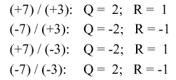
We present the preceding division algorithm, revised for signed numbers, as shown in Figure 3.20a. Four examples, corresponding to each of the four preceding sign permutations, are given in Figure 3.20b and 3.20c.
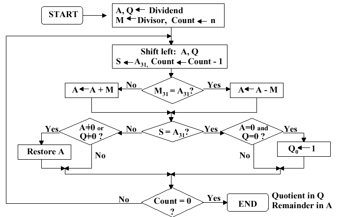
(a)
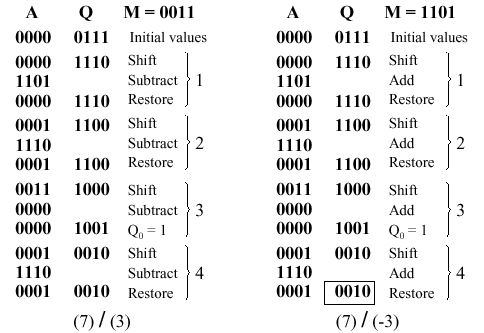
(b)
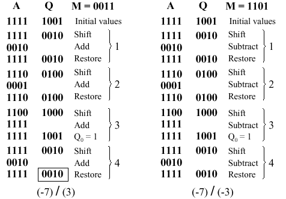
(c)
Figure
3.20. Division of 32-bit Boolean number representations: (a)
algorithm, and (b,c) examples using division of +7 or -7 by the
integer +3 or -3; adapted from [Maf01].
Self-Exercise. Be able to trace each example shown in Figure 3.20b,c through the algorithm whose flowchart is given in Figure 3.20a. Know how each part of the algorithm works, and why it behaves that way. Hint: This exercise, or a part of it, is likely to be an exam question.
3.3.2.3. Divisiion in MIPS. MIPS supports
multiplication and division using existing hardware, primarily the ALU
and shifter. MIPS needs one extra hardware component - a 64-bit
register able to support sll and sra
instructions. The upper (high) 32 bits of the register contains the
remainder resulting from division. This is moved into a register in
the MIPS register stack (e.g., $t0) by the
mfhi command. The lower 32 bits of the 64-bit register
contains the quotient resulting from division. This is moved into a
register in the MIPS register stack by the mflo command.
In MIPS assembly language code, signed division is
supported by the div instruction and unsigned division,
by the divu instruction. MIPS hardware does not check for
division by zero. Thus, divide-by-zero exception must be detected
and handled in system software. A similar comment holds for overflow
or underflow resulting from division.
Figure 3.21 illustrates the MIPS ALU that supports integer arithmetic operations (+,-,x,/).
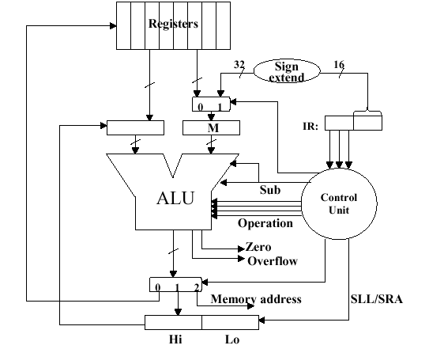
Figure 3.21. MIPS
ALU supporting the integer arithmetic operations (+,-,x,/), adapted
from [Maf01].
Self-Exercise. Show how the MIPS ALU in Figure 3.21 supports the integer arithmetic operations (+,-,x,/) using the algorithms and hardware diagrams given thus far. Hint: This exercise, or a part of it, is likely to be an exam question.
Reading Assignments and Exercises
Floating point (FP) representations of decimal numbers are essential to scientific computation using scientific notation. The standard for floating point representation is the IEEE 754 Standard. In a computer, there is a tradeoff between range and precision - given a fixed number of binary digits (bits), precision can vary inversely with range. In this section, we overview decimal to FP conversion, MIPS FP instructions, and how registers are used for FP computations.
We have seen that an n-bit register can represent unsigned integers in the range 0 to 2n-1, as well as signed integers in the range -2n-1 to -2n-1-1. However, there are very large numbers (e.g., 3.15576 · 1023), very small numbers (e.g., 10-25), rational numbers with repeated digits (e.g., 2/3 = 0.666666...), irrationals such as 21/2, and transcendental numbers such as e = 2.718..., all of which need to be represented in computers for scientific computation to be supported.
We call the manipulation of these types of numbers
floating point arithmetic because the decimal point is not
fixed (as for integers). In C, such variables are declared as the
float datatype.
Scientific notation has the following configuration:
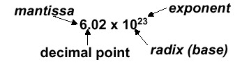
and can be in normalized form (mantissa has exactly one digit to the left of the decimal point, e.g., 2.3425 · 10-19) or non-normalized form. Binary scientiic notation has the folowing configuration, which corresponds to the decimal forms:
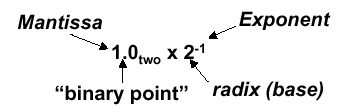
Assume that we have the following normal format for scientific notation in Boolean numbers:
+1.xxxxxxx2 · wyyyyy2 ,
where "xxxxxxx" denotes the significand and "yyyyy" denotes the exponent and we assume that the number has sign S. This implies the following 32-bit representation for FP numbers:
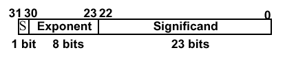
which can represent decimal numbers ranging from -2.0 · 10-38 to 2.0 · 1038.
In FP, overflow and underflow are slightly different than in integer numbers. FP overflow (underflow) refers to the positive (negative) exponent being too large for the number of bits alloted to it. This problem can be somewhat ameliorated by the use of double precision, whose format is shown as follows:
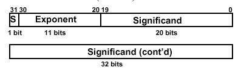
Here, two 32-bit words are combined to support an
11-bit signed exponent and a 52-bit significand. This representation
is declared in C using the double datatype, and can support
numbers with exponents ranging from -30810 to 30810.
The primary advantage is greater precision in the mantissa.
The following chart illustrates specific types of overflow and underflow encountered in standard FP representation:
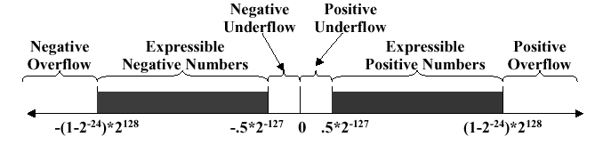
Both single- and double-precision FP representations are supported by the IEEE 754 Standard, which is used in the vast majority of computers since its publication in 1980. IEEE 754 facilitates the porting of FP programs, and ensures minimum standards of quality for FP computer arithmetic. The result is a signed representation - the sign bit is 1 if the FP number represented by IEEE754 is negative. Otherwise, the sign is zero. A leading value of 1 in the significand is implicit for normalized numbers. Thus, the significand, which always has a value between zero and one, occupies 23 + 1 bits in single-precision FP and 52 + 1 bits in double precision. Zero is represented by a zero significand and a zero exponent - there is no leading value of one in the significand. The IEEE 754 representation is thus computed as:
FPnumber = (-1)S · (1 + Significand) · 2Exponent .
As a parenthetical note, the significand can be translated into decimal values via the following expansion:
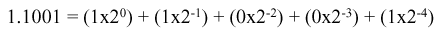
With IEEE 754, it is possible to manipulate FP numbers without having special-purpose FP hardware. For example, consider the sorting of FP numbers. IEEE 754 facilitates breaking FP numbers up into three parts (sign, significant, exponent). The numbers to be sorted are ordered first according to sign (negative < positive), second according to exponent (larger exponent => larger number), and third according to significand (when one has at least two numbers with the same exponents).
Another issue of interest in IEEE 754 is biased notation for exponents. Observe that twos complement notation does not work for exponents: the largest negative (positive) exponent is 000000012 (111111112). Thus, we must add a bias term to the exponent to center the range of exponents on the bias number, which is then equated to zero. The bias term is 127 (1023) for the IEEE 754 single-precision (double-precision) representation. This implies that
FPnumber = (-1)S · (1 + Significand) · 2(Exponent - Bias) .
As a result, we have the following example of binary to decimal floating point conversion:
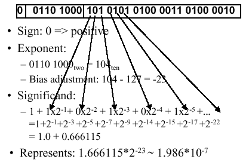
Decimal-to-binary FP conversion is somewhat more difficult. Three cases pertain: (1) the decimal number can be expressed as a fraction n/d where d is a power of two; (2) the decimal number has repeated digits (e.g., 0.33333); or (3) the decimal number does not fit either Case 1 or Case 2. In Case 1, one selects the exponent as -log2(d), and converts n to binary notation. Case 3 is more difficult, and will not be discussed here. Case 2 is exemplified in the following diagram:
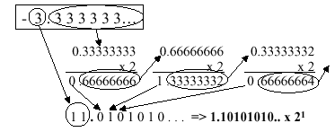
Here, the significand is 101 0101 0101 0101 0101 0101, the sign is negative (representation = 1), and the exponent is computed as 1 + 127 = 12810 = 1000 00002. This yields the following representation in IEEE 754 standard notation:
The following table summarizes special values that can be represented using the IEEE 754 standard.
Table 3.1. Special values in the IEEE 754 standard.
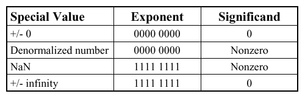
Of particular interest in the preceding table is the NaN (not a number) representation. For example, when taking the square root of a negative number, or when dividing by zero, we encounter operations that are undefined in the arithmetic operations over real numbers. These results are called NaNs and are represented with an exponent of 255 and a zero significand. NaNs can help with debugging, but they contaminate calculations (e.g., NaN + x = NaN). The recommended approach to NaNs, especially for software designers or engineers early in their respective careers, is not to use NaNs.
Another variant of FP representation is denormalized numbers, also called denorms. These number representations were developed to remedy the problem of a gap among representable FP numbers near zero. For example, the smallest positive number is x = 1.00... · 2-127, and the second smallest positive number is y = 1.0012 · 2-127 = 2-127 + 2-150. This implies that the gap between zero and x is 2-127 and that the gap between x and y is 2-150, as shown in Figure 3.22a.
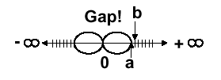 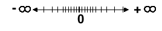
(a) (b)
Figure 3.22. Denorms: (a) Gap between zero and 2-127, and (b) Denorms close this gap - adapted from [Maf01].
This situation can be remedied by omitting the leading one from the significand, thereby denormalizing the FP representation. The smallest positive number is now the denorm 0.0...1 · 2-127 = 2-150, and the second smallest positive number is 2-149.
Applying mathematical operations to real numbers implies that some error will occur due to the floating point representation. This is due to the fact that FP addition and subtraction are not associative, because the FP representation is only an approximation to a real number.
Example 1. Using decimal numbers for clarity, let x = -1.5 · 1038, y = 1.5 · 1038, and z = 1.0. With floating point representation, we have:
x + (y + z) = -1.5 · 1038 + (1.5 · 1038 + 1.0) = 0.0
and
(x + y) + z = (-1.5 · 1038 + 1.5 · 1038) + 1.0 = 1.0
The difference occurs because the value 1.0 cannot be distinguished in the significand of 1.5 · 1038 due to insufficient precision (number of digits) of the significand in the FP representation of these numbers (IEEE 754 assumed).
The preceding example leads to several implementational issues in FP arithmetic. Firstly, rounding occurs when performing math on real numbers, due to lack of sufficient precision. For example, when multiplying two N-bit numbers, a 2N-bit product results. Since only the upper N bits of the 2N bit product are retained, the lower N bits are truncated. This is also called rounding toward zero.
Another type of rounding is called rounding to infinity. Here, if rounding toward +infinity, then we always round up. For example, 2.001 is rounded up to 3, -2.001 is rounded up to 2. Conversely, if rounding toward -infinity, then we always round down. For example, 1.999 is rounded down to 1, -1.999 is rounded down to -2. There is a more familiar technique, for example, where 3.7 is rounded to 4, and 3.1 is rounded to 3. In this case, we resolve rounding from n.5 to the nearest even number, e.g., 3.5 is rounded to 4, and -2.5 is rounded to 2.
A second implementational issue in FP arithmetic is addition and subtraction of numbers that have nonzero significands and exponents. Unlike integer addition, we can't just add the significands. Instead, one must:
We will review several approaches to floating point operations in MIPS in the following section.
Reading Assignments and Exercises
The MIPS FP architecture uses separate floating point
insturctions for IEEE 754 single and double precision. Single
precision uses add.s, sub.s,
mul.s, and div.s, whereas double precision
instructions are add.d, sub.d,
mul.d, and div.d. These instructions are
much more complicated than their integer counterparts. Problems with
implementing FP arithmetic include inefficiencies in having different
instructions that take significantly different times to execute (e.g.,
division versus addition). Also, FP operations require much more
hardware than integer operations.
Thus, in the spirit of RISC design philosophy, we
note that (a) a particular datum is not likely to change its datatype
within a program, and (b) some types of programs do not require FP
computation. Thus, in 1990, the MIPS designers decided to separate
the FP computations from the remainder of the ALU operations, and use
a separate chip for FP (called the coprocessor). A MIPS
coprocessor contains 32 32-bit registers designated as
$f0, $f1, ..., etc. Most of these registers
are specified in the .s and .d instructions.
Double precision operands are stored in register pairs (e.g.,
$f0,$f1 up to $f30,$f31).
The CPU thus handles all the regular computation,
while the coprocessor handles the floating point operations. Special
instructions are required to move data between the coprocessor(s) and
CPU (e.g., mfc0, mtc0, mfc0,
mtc0, etc.), where cn refers to coprocessor
#n. Similarly, special I/O operations are required to load and
store data between the coprocessor and memory (e.g.,
lwc0, swc0, lwc1,
swc1, etc.)
FP coprocessors require very complex hardware, as shown in Figure 3.23, which portrays only the hardware required for addition.
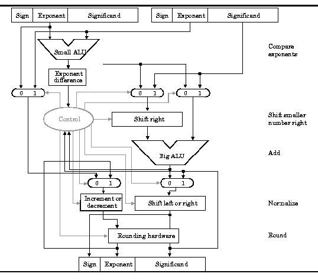
Figure 3.23. MIPS
ALU supporting floating point addition, adapted
from [Maf01].
The use of floating point operations in MIPS assembly code is described in the following simple example, which implements a C program designed to convert Fahrenheit temperatures to Celsius.
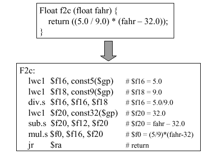
Here, we assume that there is a coprocessor c1
connected to the CPU. The values 5.0 and 9.0 are respectively loaded
into registers $f16 and $f18 using the
lwc1 instruction with the global pointer as base address
and the variables const5 and const9 as
offsets. The single precision division operation puts the quotient of
5.0/9.0 into $f16, and the remainder of the computation
is straightforward. As in all MIPS procedure calls, the
jr instruction returns control to the address stored in
the $ra register.
References
[Maf01] Mafla, E. Course Notes, CDA3101, at URL
http://www.cise.ufl.edu/~emafla/(as-of 11 Apr 2001).[Pat98] Patterson, D.A. and J.L. Hennesey. Computer Organization and Design: The Hardware/Software Interface, Second Edition, San Francisco, CA: Morgan Kaufman (1998).